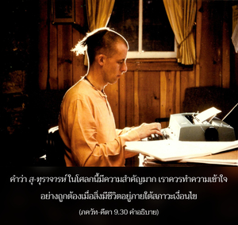

แม้กระทำในสิ่งที่เลวร้ายที่สุด หากเขาปฏิบัติการอุทิศตนเสียสละรับใช้พิจารณาได้ว่าผู้นี้เป็นนักบุญ เนื่องจากเขาสถิตอย่างถูกต้องในความมุ่งมั่นของตนเอง



คำว่า สุ-ทุราจารห์ ในโศลกนี้มีความสำคัญมาก เราควรทำความเข้าใจอย่างถูกต้องเมื่อสิ่งมีชีวิตอยู่ภายใต้สภาวะเงื่อนไข จะมีกิจกรรมอยู่สองอย่างคือกิจกรรมหนึ่งอยู่ภายใต้เงื่อนไข และอีกกิจกรรมหนึ่งเป็นพื้นฐานเดิมแท้ สำหรับการปกป้องร่างกาย หรืออยู่ภายใต้กฎของสังคม และรัฐนั้นแน่นอนจะว่ามีกิจกรรมต่างๆ แม้สำหรับสาวกที่สัมพันธ์กับชีวิตภายใต้สภาวะเงื่อนไขกิจกรรมเหล่านี้เรียกว่า อยู่ภายใต้เงื่อนไข นอกจากนี้ชีวิตผู้สำนึกอย่างสมบูรณ์ในธรรมชาติทิพย์ของตนปฏิบัติในกฺฤษฺณจิตสำนึก หรืออุทิศตนเสียสละรับใช้ต่อองค์ภควานฺมีกิจกรรมที่เรียกว่าเป็นทิพย์ กิจกรรมเหล่านี้ปฏิบัติไปในสถานภาพเดิมแท้ของตนเอง เรียกทางเทคนิคว่าการอุทิศตนเสียสละรับใช้ ตอนนี้ที่อยู่ในระดับที่อยู่ภายใต้สภาวะที่มีเงื่อนไขนั้น บางครั้งกิจกรรมในการอุทิศตนเสียสละรับใช้ และการรับใช้ที่มีเงื่อนไขสัมพันธ์กับร่างกายจะไปด้วยกันได้ แต่บางครั้งไปด้วยกันไม่ได้ สาวกจะระวังมากเพื่อไม่ทำสิ่งใดให้ไปทำลายสภาวะอันบริสุทธิ์ของตนเองเท่าที่จะเป็นไปได้ โดยทราบดีว่าความสมบูรณ์ในกิจกรรมขึ้นอยู่กับความรู้แจ้งมากยิ่งขึ้นในกฺฤษฺณจิตสำนึก อย่างไรก็ดี บางครั้งอาจพบว่าบุคคลในกฺฤษฺณจิตสำนึกปฏิบัติในสิ่งที่เลวร้ายที่สุดทางสังคม หรือทางการเมือง แต่การตกลงต่ำชั่วคราวเช่นนี้ไม่ได้ตัดสิทธิ์ของเขา ในศฺรีมทฺ-ภาควตมฺ กล่าวว่าหากผู้ที่ตกลงต่ำแต่ปฏิบัติตนอย่างหมดหัวใจในการรับใช้ทิพย์ต่อองค์ภควานฺ พระองค์ผู้ทรงประทับภายในหัวใจจะทำให้เขาบริสุทธิ์ขึ้น และให้อภัยจากสิ่งเลวร้ายนั้น มลพิษทางวัตถุนั้นรุนแรงมาก แม้โยคีปฏิบัติในการรับใช้พระองค์อย่างสมบูรณ์บางครั้งยังตกหลุมพราง แต่กฺฤษฺณจิตสำนึกมีพลังมาก การตกลงต่ำชั่วครั้งชั่วคราวเช่นนี้จะได้รับการแก้ไขให้ถูกต้องโดยทันที ฉะนั้น วิธีการอุทิศตนเสียสละรับใช้จึงมีผลสำเร็จอยู่เสมอ ไม่มีผู้ใดควรเยาะเย้ยสาวกในการที่ตกลงต่ำจากวิถีทางอันประเสริฐอันเนื่องจากอุบัติเหตุ ดังจะอธิบายในโศลกต่อไป การตกลงต่ำชั่วคราวเช่นนี้จะยุติลงในเวลาต่อมาทันทีที่สาวกสถิตอย่างสมบูรณ์ในกฺฤษฺณจิตสำนึก
ดังนั้น บุคคลผู้สถิตในกฺฤษฺณจิตสำนึกและปฏิบัติด้วยความมุ่งมั่นในวิธีการสวดภาวนา หเร กฺฤษฺณ หเร กฺฤษฺณ กฺฤษฺณ กฺฤษฺณ หเร หเร / หเร ราม หเร ราม ราม ราม หเร หเร ควรพิจารณาว่าอยู่ในสถานภาพทิพย์ ถึงแม้จะด้วยความบังเอิญ หรือเป็นอุบัติเหตุที่พบว่าเขาตกลงต่ำ คำว่า สาธุรฺ เอว“เขาเป็นนักบุญ” นั้นได้มีการเน้นมาก มีคำเตือนสำหรับผู้ไม่ใช่สาวกว่าเนื่องจากการตกลงต่ำด้วยอุบัติเหตุ สาวกไม่ควรถูกเยาะเย้ย และควรพิจารณาว่าเขายังเป็นนักบุญแม้ตกลงต่ำโดยอุบัติเหตุ และคำว่า มนฺตวฺยห์ ยิ่งเน้นขึ้นไปอีก หากผู้ใดไม่ปฏิบัติตามกฎนี้ และเยาะเย้ยสาวกในการตกลงต่ำโดยอุบัติเหตุ เท่ากับผู้นี้ไม่เชื่อฟังคำสั่งขององค์ภควานฺ คุณสมบัติเดียวของสาวก คือปฏิบัติการอุทิศตนเสียสละรับใช้อย่างมุ่งมั่นเท่านั้น
ใน นฺฤสึห ปุราณ มีข้อความดังต่อไปนี้
ภควติ จ หราวฺ อนนฺย-เจตา
ภฺฤศ-มลิโน ’ปิ วิราชเต มนุษฺยห์
น หิ ศศ-กลุษ-จฺฉพิห์ กทาจิตฺ
ติมิร-ปราภวตามฺ อุไปติ จนฺทฺรห์
ความหมายคือ แม้ปฏิบัติในการอุทิศตนเสียสละรับใช้อย่างสมบูรณ์ต่อองค์ภควานฺ บางครั้งพบว่าบุคคลปฏิบัติในกิจกรรมที่น่ารังเกียจ กิจกรรมเหล่านี้ควรพิจารณาว่าเหมือนกับจุดต่างๆ ที่รวมกันเป็นรูปกระต่ายบนดวงจันทร์ จุดเหล่านี้ไม่ได้กลายมาเป็นอุปสรรคในการส่องแสงของดวงจันทร์ ในทำนองเดียวกัน การตกลงต่ำโดยอุบัติเหตุของสาวกจากวิถีทางของบุคลิกของนักบุญ ไม่ได้ทำให้เขาน่ารังเกียจ
อีกด้านหนึ่ง เราไม่ควรเข้าใจผิดว่าสาวกที่อยู่ในการอุทิศตนเสียสละรับใช้ทิพย์สามารถปฏิบัติในสิ่งที่น่ารังเกียจต่างๆ ได้ โศลกนี้พาดพิงถึงเฉพาะอุบัติเหตุอันเนื่องมาจากพลังอันแข็งแกร่งที่มาสัมผัสกับวัตถุเท่านั้น การอุทิศตนเสียสละรับใช้เหมือนกับการประกาศสงครามกับพลังงานแห่งความหลง ตราบเท่าที่เรายังไม่แข็งแรงพอที่จะต่อสู้กับพลังงานแห่งความหลง อาจตกลงต่ำโดยอุบัติเหตุได้ แต่เมื่อแข็งแรงพอเราก็จะไม่อยู่ภายใต้อำนาจแห่งการตกลงต่ำเช่นนี้อีกต่อไป ดังที่ได้อธิบายแล้วว่า ไม่ควรมีผู้ใดฉวประโยชน์จากโศลกนี้ไปกระทำสิ่งเหลวไหล และคิดว่าตนเองยังเป็นสาวก หากไม่พัฒนาบุคลิกของตนให้ดีขึ้นด้วยการอุทิศตนเสียสละรับใช้ พึงเข้าใจไว้ว่าเราไม่ใช่สาวกระดับสูง